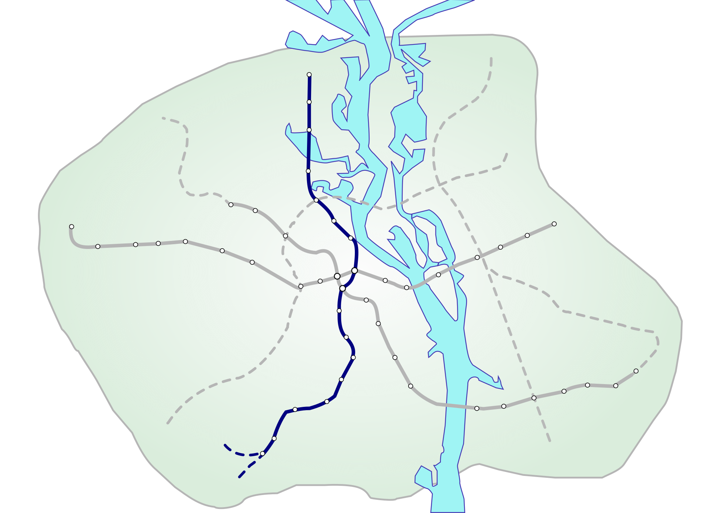
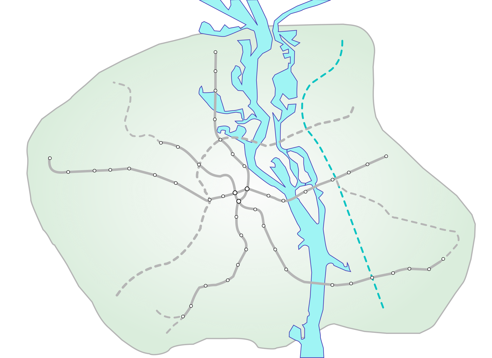
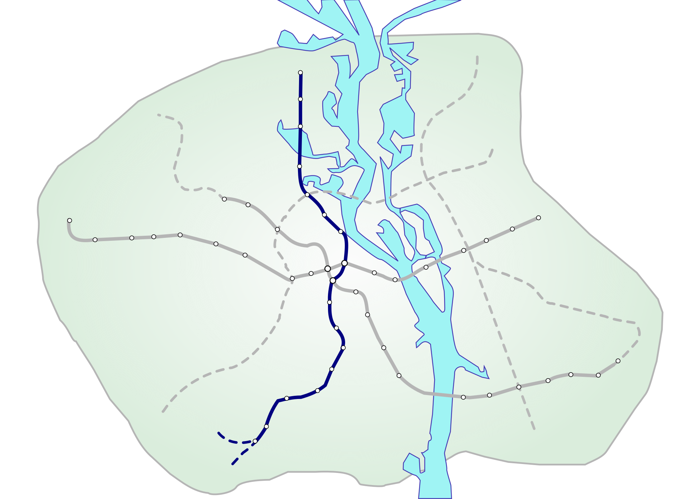
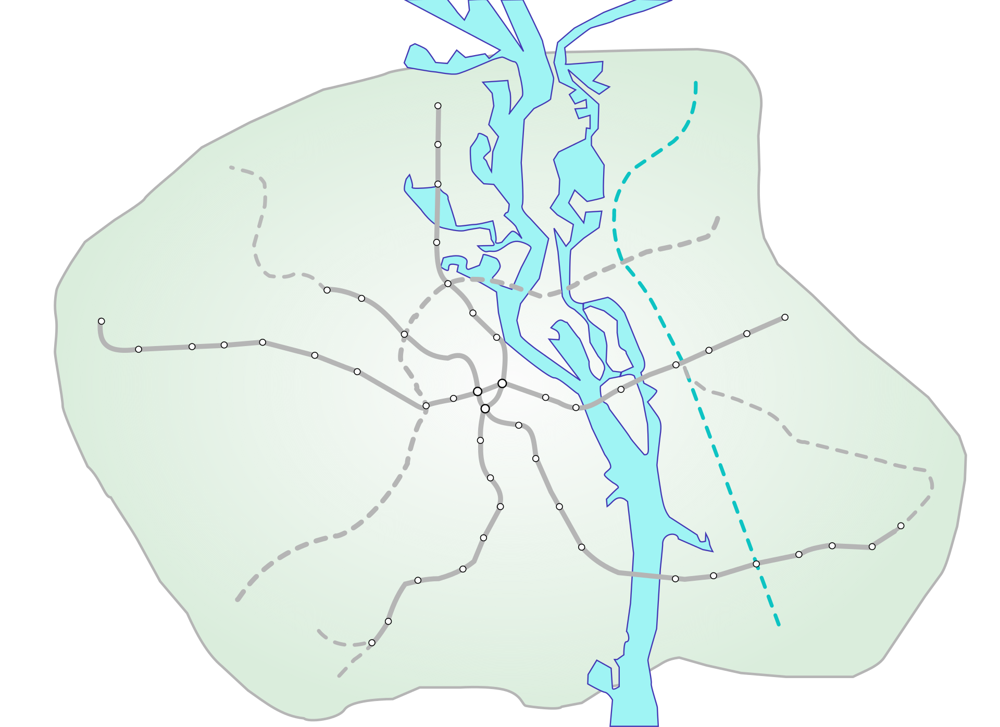

Автор сайту
Facebook: 
YouTube: 
Instagram: 
Київський метрополітен
Facebook:
Instagram:
UATV Channel
Facebook English:
YouTube:
Instagram:
Про нас |
|
Автор сайтуFacebook: YouTube: Instagram: |
Київський метрополітенFacebook: Instagram: |
UATV ChannelFacebook English: YouTube: Instagram: |
 


